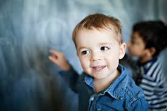
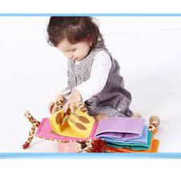
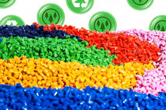

Audiences
Six different sound effects of insects and moveable eyebrows and wings are playful enough for young kids from 3 to 8.

Goal
This bee flashlight practices practical ability and learn the sounds of different animals and insects. The changing light and moveable elements could make the whole learning process interesting.

Considerable Design
Both of the shape and the material of the BEE are considerable. I tended to make this safe and attracvtive by young children.